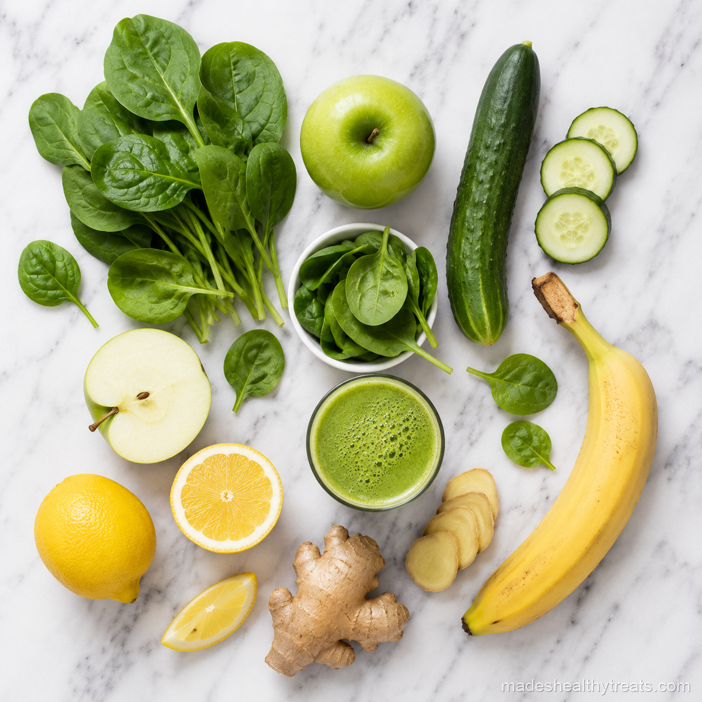

The Green Smoothie Every Day Benefits I Actually Notice
When people ask me about green smoothie every day benefits, I always start with the honest part. Your body may need a little adjustment time. If you go from barely eating greens to drinking spinach, cucumber, ginger, and fiber every morning, your digestion might grumble for a few days while it remembers what plants are. For me, that first week felt like my system waking up slowly, with less heaviness by the end of the morning.
Week One Is Usually About Digestion
The first week is often where your gut gets introduced to more fiber, water, and micronutrients than it may be used to seeing at breakfast. A little bloating can happen, and I do not panic about it. I blend thoroughly, drink slowly, and keep the recipe simple so my body can settle in.
Week Two Is Where Energy Feels Steadier
By week two, I usually notice my energy becoming less spiky. A green smoothie with banana, greens, chia, and a gentle fat like almond butter gives my morning a softer landing than coffee alone. I still drink coffee sometimes, but I no longer ask it to do the job of breakfast.
Week Three and Beyond Can Show Up On Your Skin
After a few weeks, my skin tends to look calmer and a little more hydrated. I think part of that is vitamins and antioxidants, and part of it is simply that I am starting the day with water rich food instead of something dry and rushed. Cravings also shift because my body gets used to receiving real nourishment early.

I have learned that the best wellness habits are the ones that still feel kind on a normal Tuesday morning.
Three Green Smoothies I Rotate Through
My everyday green is spinach, frozen banana, cucumber, lemon, ginger, chia, and coconut water. My creamy green uses spinach, avocado, green apple, lime, hemp seeds, and almond milk when I need more staying power. My bright tropical green uses spinach, mango, pineapple, mint, and coconut water when I want something that tastes like vacation before responsibilities arrive.
What I Tell Friends Who Want To Start
The real green smoothie every day benefits come from repetition, not perfection. Choose one recipe, make it easy, and let your body have time to respond. I would rather see you drink a simple spinach banana smoothie five days a week than build a complicated masterpiece once and never again.
How I Keep The Habit From Getting Boring
The thing that keeps daily green smoothies from becoming boring is changing the mood without changing the whole habit. Some days I want bright lemon and ginger, so the smoothie tastes clean and crisp. Other days I want mango and mint because I need breakfast to feel cheerful. When the weather is cold, I add cinnamon, almond butter, and a little oat milk so the smoothie feels creamier and more comforting. The base habit stays the same, but the flavor can follow the season and my mood.
What I Wish I Knew Before Starting
I wish I knew that a green smoothie does not have to be aggressively green to be worthwhile. In the beginning I tried to cram in every superfood I owned, and the result tasted like I blended a salad bar with regret. Now I use fewer ingredients and give each one a reason to be there. Greens for minerals, fruit for sweetness, seeds for fiber, ginger or citrus for brightness, and liquid that matches the texture I want. Simple is usually the version I keep making.
You Might Also Like

Does a Smoothie a Day Actually Help You Lose Weight? I Tried It for 30 Days
I replaced my rushed breakfast with one green smoothie every morning for 30 days and tracked what really changed.
Read more →
The 7 Biggest Smoothie Mistakes That Are Ruining Your Results
I made these smoothie mistakes myself before I learned how to blend for energy, fullness, and real results.
Read more →
Do Juice Cleanses Actually Work? An Honest Answer With No Hype
I tried a three day juice cleanse and came away with a balanced answer that is neither hype nor eye rolling.
Read more →Made's Note
Start gentle and make it delicious. Your green smoothie should feel like a morning kindness, not a punishment in a jar. When I think about green smoothie every day benefits, I think about real mornings, real kitchens, and the small choices that help us feel at home in our bodies.